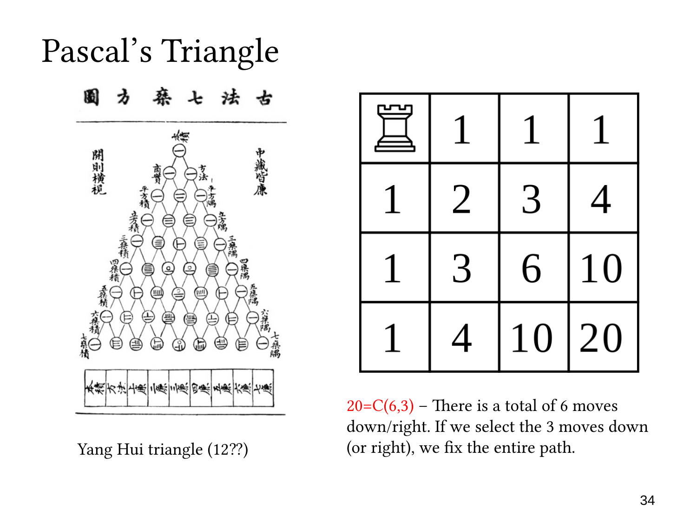

L1.7 · 第 34 页讲解原文
查看这一页课件

棋盘路径：右下角共有 20 条
这一页完成了棋盘路径计数，右下角的答案是
20=(36).
从左上角到右下角，按单位格移动必须向下三次、向右三次，总共六步。任意一条路线都可以表示为一个由三个 D 和三个 R 组成的序列。
选择六个位置中的三个放 D，其余位置自动放 R，就唯一确定了一条路线；反过来，每条路线也唯一给出这三个位置。因此两者存在 bijection：
合法路线⟷六个位置中选三个的位置集合.
所以路径数为
(36)=3!3!6!=20.
也可以用前一页两个相邻格子的路径数计算：
10+10=20.
这是 Pascal’s identity 在棋盘中的体现：
(36)=(25)+(35).
选择向下的三步或选择向右的三步都可以，因为两者互为补集。一般从起点向下 r 次、向右 c 次的路径数是 (rr+c)=(cr+c)。